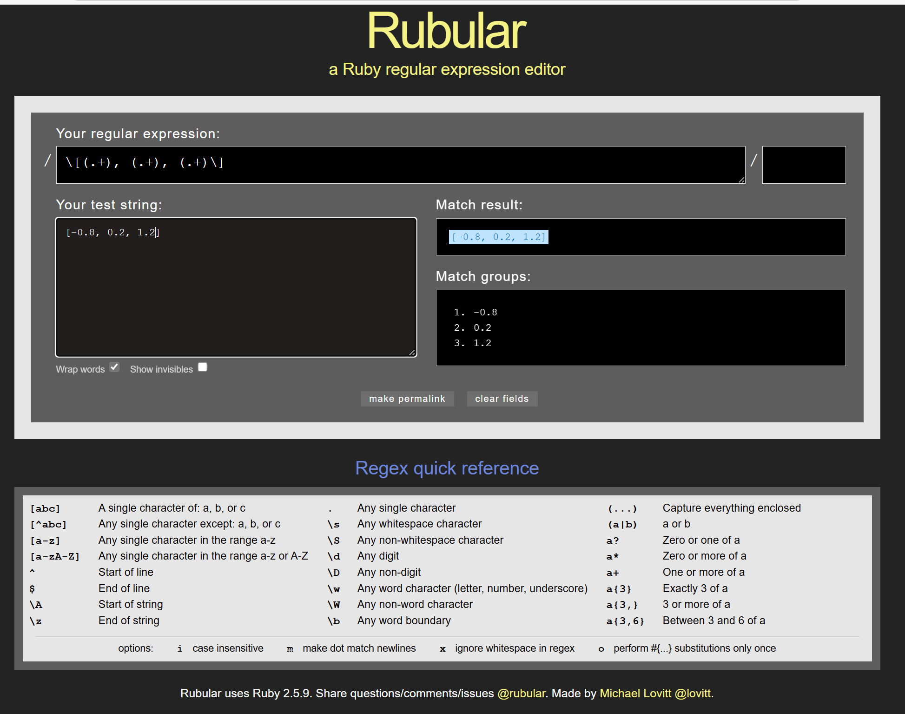

rubular あるいは正規表現(Regular Expression)
Table of Contents
1. 正規表現regular expression
文字情報を取り出す便利ツールが正規表現(regular expression)です． これって覚えようとして挫折したことないですか？ 私はRegExpを10年以上使えなくて，本を何冊もトライして．．． 途中で諦めました． でもね．http://rubular.com で わずか10分でバリバリ使えるようになってました． 「覚えない」というコツです．
2. rubular
|  |
| Rubularの画面(http://rubular.com). |
Rubularの画面を見てください． 一番上に正規表現を入れます． 左下にtest stringを入れます． そうすると右に抽出結果が出てきます．
まずはtest文字列として
[-0.8, 0.2, 1.2]
を考えます．
これから数値の配列を取り出します． まず，取り出す文字列(capture everything enclosed)は
(.+)
で取り出されます．any single caharacterを表す'.'と， 一つ以上を表す(+)を入れています． これからいらん文字を外していくと考えてください． 少し試行錯誤すれば，
: \[(.+), (.+), (.+)\]
なんかで数値だけが取り出せたでしょうか？
浮動小数点数を表す正しい表記を検索で調べると
(-?\d+\.\d+)
なんですが， 上の表記が楽で間違いないですよね．
正規表現ってたくさん覚えないといけないと思いがちですが， Regex quick referenceにまとめられている要素だけでできています． 大きく分類すると，
- 範囲指定(左列上)
- 位置指定子(左列下)
- 文字指定子(中列)
- 量指定子(右列)
です． さらに丸括弧()で抽出になります． あとは，そのアンチョコ（カンペ）を見ながら，試行錯誤して 取り出せればいいんですよ．
3. rubyでの利用
Rubyに組み込むには，
1: # file:./re_gets_examples.rb 2: 3: line = "* fix calc kpoints:50, in_plane:0.98, vertical:1.00" 4: 5: string = Regexp.new("\\* fix calc kpoints:50, in_plane:(.+), vertical:(.+)") 6: line =~ string 7: p [$1.to_f, $2.to_f] #=> [0.98, 1.00] 8: 9: res = line.scan(string) 10: p res #=> [["0.98", "1.00"]] 11: p res[0].map(&:to_f) #=> [0.98, 1.0] 12: 13: p m = line.match(string) 14: #=> #<MatchData "* fix calc kpoints:50, in_plane:0.98, vertical:1.00" 1:"0.98" 2:"1.00"> 15: p [m[1].to_f, m[2].to_f] #=> [0.98, 1.0] 16: 17: require 'scanf' 18: p line.scanf("* fix calc kpoints:50, in_plane:%f, vertical:%f") 19: #=>[0.98, 1.0]
などとします． 正規表現で読み込むと，Stringで読み込まれます． scanf("%f")と違って，to_f(to float)やto_i(to integer)が必要です．
4. tagつきのregexp
さらにこの頃，気がついた手法で，tagをつけるのがあります．
string = Regexp.new('in_plane:(?<x>.+), vertical:(?<y>.+)') res = line.match(string) => #<MatchData "in_plane:0.98, vertical:1.00" x:"0.98" y:"1.00"> irb(main): > res[:x] => "0.98" irb(main): > res[:y] => "1.00"
:x とか :y というsymbolで取れます．
'=~' だとさらに
irb(main):001:0> line = '* fix calc kpoints:50, in_plane:0.98, vertical:1.00' => "* fix calc kpoints:50, in_plane:0.98, vertical:1.00" irb(main):003:0> /in_plane:(?<x>.+), vertical:(?<y>.+)/ =~ line => 23 irb(main):004:0> x => "0.98" irb(main):005:0> y => "1.00"
対応した名前がついたローカル変数になります．